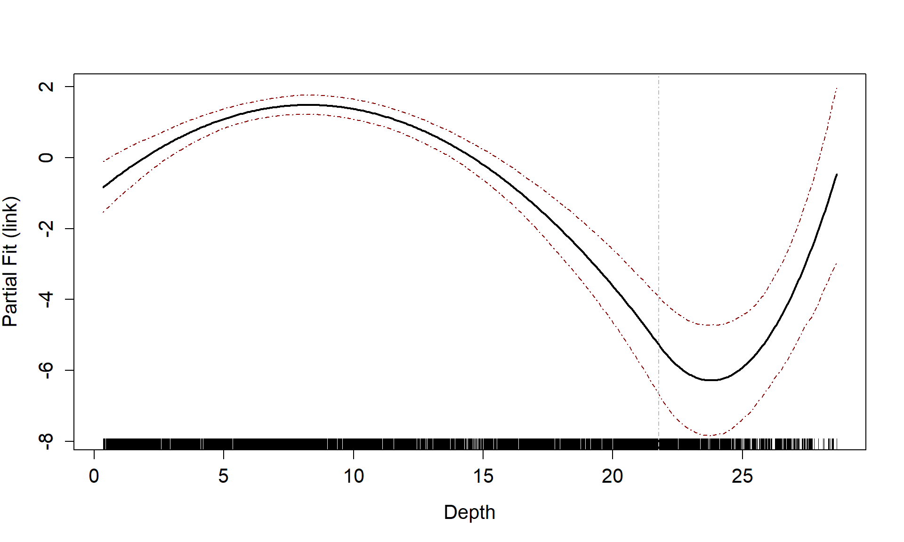

Example Baseline Characterisation Analysis for an Offshore Renewables Development Area
LAS Scott-Hayward and ML Mackenzie
2023-12-12
Source:vignettes/web/RenewablesCaseStudy_MRSea.Rmd
RenewablesCaseStudy_MRSea.RmdIntroduction
count.data <- readRDS("data/nystedphaseA.rds")The data are visual aerial transect data from the Nysted windfarm area in Denmark provided to the University of St Andrews by Aarhus University. There are two years of data (2001 and 2002) with surveys undertaken in January, February and March. The response is counts of long tailed ducks that have been distance corrected. Each transect has been segmented into 500m pieces and the strip width is approximately 2km.
ptheme <- ggplot() + theme(legend.text=element_text(size=10),
plot.title = element_text(size=14, face="bold"),
axis.text=element_text(size=12),
axis.title=element_text(size=12,face="bold"),
panel.grid.major = element_blank(),
panel.grid.minor = element_blank()) +
theme_bw() + coord_equal()
plotbreaks<-waiver()
p<-ptheme +
geom_point(data=filter(count.data, Count==0), aes(x = x.pos, y = y.pos),shape=16, colour='thistle', alpha=0.8, size=1) +
geom_point(data=filter(count.data, Count>0), aes(x = x.pos, y = y.pos, size = Count), alpha=0.45, colour='red') +
scale_size_area(breaks=plotbreaks) +
xlab("Easting") + ylab("Northing") +
facet_wrap(~YearMonth, ncol=3)
pAnalysis
Since the response data are adjusted counts and so we would expect a quasi-Poisson or Tweedie distribution to be most appropriate for the data. The variables available are depth and x and y coordinates (in UTMs). There is also an area associated with each segment so an offset is preferred.
Co-linearity check
- Fit a simple model and assess variables for co-linearity. For this
assessment the
familyis not important so for simplicity we choose the quasi-Poisson.
simpleModel <- glm(Count ~ as.factor(YearMonth) +
Depth + x.pos + y.pos + offset(log(Area)), family = quasipoisson, data = count.data)
car::vif(simpleModel)
#> GVIF Df GVIF^(1/(2*Df))
#> as.factor(YearMonth) 1.001860 5 1.000186
#> Depth 4.666708 1 2.160256
#> x.pos 1.585197 1 1.259046
#> y.pos 5.386125 1 2.320803- The GVIFs suggest that there are no co-linearity issues so we may use all available variables.
Selection of 1D Covariates
We use the function runSALSA1D to select what covariates
are included and whether or not they are smooth. SALSA selects the
smoothness of each term (number and location of knots) and by default,
10-fold cross-validation (CV) is used to choose between the best smooth
term, a linear term or no term at all. To not allow the removal process
the user may set removal = FALSE as a parameter in the
function runSALSA1D.
If you wish to make predictions once the model is fitted, then a prediction grid should be created and specified. This is because the splines fitted here (B-splines) are unable to make predictions outside of the range they were created. For example, if the data range for depth is smaller than the range of depths in the prediction data, predictions cannot be made.
For our prediction grid, we must ensure that the depth and area columns are named the same as the data and the depth values are all positive. Additionally, as this grid has been used for other means, we reduce it down to one single layer and select one season and one impact level.
data("nysted.predictdata") # contains predict.data
# This is a spatial grid for making predictions. All covariates in
# final model must be in this data frame and the naming must be the
# same as for the data
nysted.predictdata <- nysted.predictdata %>%
rename(Depth = depth,
Area = area) %>%
mutate(Depth = abs(Depth)) %>%
filter(impact==0, season==1) %>%
select(-starts_with("truth"))- Here the range of the predictions is slightly wider than the range
of the data, so we will specify
nysted.predictdatawhen running SALSA.
A brief check of a quasi-Poisson model with a smooth for depth indicated there might be merit in checking the use of the Tweedie distribution. For more information on using the Tweedie distribution, see the vignette Using the Tweedie Distribution
library(statmod)
library(tweedie)
profout <- tweedie.profile(Count ~ x.pos + y.pos + YearMonth + Depth,
data=count.data,
xi.vec = seq(1.01, 1.99, by=0.05), do.plot=TRUE)
#> 1.01 1.06 1.11 1.16 1.21 1.26 1.31 1.36 1.41 1.46 1.51 1.56 1.61 1.66 1.71 1.76 1.81 1.86 1.91 1.96
#> ....................Done.
profout$xi.max
#> [1] 1.427347Now that we have an estimate for the Tweedie variance power parameter we can start fitting models.
Since we intend to use the spatial coordinates in a 2D smooth later, we will ignore the X and Y coordinates for now. To fit the 1D smooths, we set up the initial model with factor covariates and the offset term and specify the parameters required for SALSA1D:
count.data$response <- count.data$Count
initialModel <- glm(response ~ as.factor(YearMonth) + offset(log(Area)),
family=tweedie(var.power=profout$xi.max, link.power = 0),
data = count.data)Our preference would be to use k-fold cross-validation as the fitness measure where possible. However, it can take a long time to fit models and for speed we have chosen to use a BIC for this vignette (a version suitable for the Tweedie distribution). For the depth term we will try both a degree 2 (quadratic) B-spline and a natural spline.
varlist = "Depth"
salsa1dlist <- list(fitnessMeasure = "BICtweedie",
minKnots_1d = 1,
maxKnots_1d = 3,
startKnots_1d = 1,
degree = 2,
gaps = 0,
splines = "bs")Note that if you want to use k-fold cross-validation as a fitness
measure, you will need an additional parameter in the list;
cv.opts. The code to use 10-fold cross-validation is shown
below but not run for this example.
salsa1dlist <- list(fitnessMeasure = "cv.gamMRSea",
minKnots_1d = 2,
maxKnots_1d = 3,
startKnots_1d = 1,
degree = 2,
gaps = 0,
cv.opts=list(cv.gamMRSea.seed=1, K=10))It is likely that the data will be correlated along transect so we will add a panel variable to calculate robust standard errors. Later we will check the residuals for residual correlation to confirm this choice. The panel variable is each unique survey-transect. There are approximately 23 transects per survey leading to 153 panels.
Note: the data must be ordered by time along each transect
# run SALSA
salsa1dOutput.bs <- runSALSA1D(initialModel = initialModel,
salsa1dlist = salsa1dlist,
varlist = varlist,
factorlist = c("YearMonth"),
predictionData = nysted.predictdata,
datain = count.data,
panelid = count.data$TransectID,
removal = TRUE,
suppress.printout = TRUE)- now try a natural spline:
salsa1dlist$splines = "ns"
salsa1dOutput.ns <- runSALSA1D(initialModel = initialModel,
salsa1dlist = salsa1dlist,
varlist = varlist,
factorlist = c("YearMonth"),
predictionData = nysted.predictdata,
datain = count.data,
panelid = count.data$TransectID,
removal = TRUE,
suppress.printout = TRUE)
salsa1dOutput.bs$fitStat
#> $fitStat
#> [1] 13823.87
#>
#> $CV
#> [1] 860.4657
salsa1dOutput.ns$fitStat
#> $fitStat
#> [1] 13898.11
#>
#> $CV
#> [1] 861.3047- Using either the BIC score or the CV score, the B spline is preferred so we continue with this model.
To look at the model output you can use the built in summary function
(summary.gamMRSea) to look at the summary of the model.
Note that robust standard errors are given alongside the raw standard
errors and information regarding panels is at the bottom of the output.
If each data point is a panel, then independence is assumed.
best1dmodel <- salsa1dOutput.bs$bestModel
summary(best1dmodel)
#>
#> Call:
#> gamMRSea(formula = response ~ as.factor(YearMonth) + bs(Depth,
#> knots = splineParams[[2]]$knots, degree = splineParams[[2]]$degree,
#> Boundary.knots = splineParams[[2]]$bd) + offset(log(Area)),
#> family = tweedie(var.power = 1.42734693877551, link.power = 0),
#> data = count.data, splineParams = splineParams)
#>
#> Deviance Residuals:
#> Min 1Q Median 3Q Max
#> -4.817 -2.681 -1.469 -0.725 37.328
#>
#> Coefficients:
#> Estimate Std. Error Robust S.E. t value Pr(>|t|)
#> (Intercept) -1.53203 0.33810 0.39133 -3.915 9.14e-05 ***
#> as.factor(YearMonth)2001/2 1.19234 0.25485 0.31378 3.800 0.000146 ***
#> as.factor(YearMonth)2001/3 0.83462 0.26410 0.22628 3.688 0.000227 ***
#> as.factor(YearMonth)2002/1 -0.03775 0.29410 0.24726 -0.153 0.878657
#> as.factor(YearMonth)2002/2 -0.14827 0.29896 0.23371 -0.634 0.525834
#> as.factor(YearMonth)2002/3 1.74682 0.24359 0.30277 5.770 8.31e-09 ***
#> s(Depth)1 6.02467 0.50369 0.58465 10.305 < 2e-16 ***
#> s(Depth)2 -4.44245 0.47682 0.61936 -7.173 8.18e-13 ***
#> s(Depth)3 -1.52203 1.34437 1.10032 -1.383 0.166630
#> ---
#> Signif. codes: 0 '***' 0.001 '**' 0.01 '*' 0.05 '.' 0.1 ' ' 1
#>
#> (Dispersion parameter for Tweedie family taken to be 50.53919)
#>
#> Null deviance: 77202 on 6499 degrees of freedom
#> Residual deviance: 49063 on 6491 degrees of freedom
#> AIC: NA
#>
#> Max Panel Size = 53; Number of panels = 153
#> Number of Fisher Scoring iterations: 6Some diagnostics
- Now that we have used the Tweedie distribution, check the assumed mean-variance relationship is appropriate.
plotMeanVar(best1dmodel)The Tweedie distribution looks to be a better choice than the Quasi-Poisson so we continue with this.
Partial Plots
Now that we have a smooth term selected for the depth variable, let’s look at the estimated relationship on both the link scale and the response scale. We can also assess if there is likely to be differences between the surveys.
runPartialPlots(best1dmodel,
data=count.data,
factorlist.in = c("YearMonth"),
varlist.in = varlist,
showKnots = TRUE,
type = "link",
includeB0 = TRUE)
#> [1] "Making partial plots"
runPartialPlots(best1dmodel,
data=count.data,
factorlist.in = c("YearMonth"),
varlist.in = varlist,
showKnots = TRUE,
type = "response",
includeB0 = TRUE)
#> [1] "Making partial plots"Cumulative residual plots
We can use a cumulative residual plot to indicate if our spline terms
are suitable. The blue dots are the residuals and the black line is the
line of cumulative residuals. On the covariate plots (those in
varlist) the grey line indicates what we would expect from
an over fitted covariate. i.e. one that is fitted with excessive knots
and the grey dots are the residuals from this over fitted model.
plotCumRes(model = best1dmodel, varlist = 'Depth', variableonly = TRUE)
#> [1] "Calculating cumulative residuals"There is slight under prediction at shallow depths but on the whole it looks a decent fit so We are happy with functional form of the depth relationship.
To show what happens when the functional form is inappropriate, we can use a model with depth as a linear term and re-assess the partial plot and the cumulative residual plot. Now you can see that the cumulative residuals get more and more negative indicating that there is systematic under prediction to depths of about 5m and then over prediction to about 12m and under prediction at the higher depth values.
badcovar <- update(initialModel, . ~ . + Depth)
runPartialPlots(model = badcovar, data=count.data, varlist.in = "Depth")
#> [1] "Making partial plots"
plotCumRes(model = badcovar, varlist = 'Depth', variableonly = TRUE)
#> [1] "Calculating cumulative residuals"Selection of flexibility for 2D smooth term
We have several options for interaction terms depending on how we might think the spatial distribution changes over time. On the basis of the figure in the introduction, it looks like there will be different distributions in different surveys. We have three options:
- Fixed knot locations, replicated for every survey with different
coefficients allowed (specified using
interactionTerm = YearMonthin the list of SALSA2D parameters). So, during the model fitting, if a knot moves it moves for all surfaces. - Differing knot locations for every survey (detailed in the Interaction vignette. This is set up so that each knot location only acts on one of the density surfaces. This method takes much longer to fit and may become impractical for large numbers of surveys however it is very useful if there is differing geographic coverage in the different surveys.
- The last option is to fit separate models to each of the surveys.
Here we choose option 2 as there is a slight difference in coverage between the surveys and not so many surveys as to make this impractical.
First we must create a grid of knots that will be used as candidate knot locations. This may take while and could be different every time you run it so I suggest saving the knotgrid as a file and/or setting a seed. As we have 6 factor levels, we choose 150 candidate knot locations for each survey giving us a total of 900 options.
myknots <- selectFctrKnots(count.data[,c("x.pos", "y.pos", "YearMonth")],
nk=150,
s.eed=1)
#
# write.csv(myknots, file='knotgrid_fullanalysis.csv', row.names=F)
# ~~~~~~~~~~~~~~~~~~~~~~~
ggplot() +
geom_point(data=count.data, aes(x.pos, y.pos)) +
geom_point(data=myknots, aes(x.pos, y.pos), colour='red') +
facet_wrap(~YearMonth, nrow=2) +
theme_bw() + xlab('Easting (Km)') + ylab('Northing (Km)') +
coord_equal()Figure showing the candidate knot locations for each of the interaction levels
To create the distance matrices that ensure the distance between data
in survey 1 and knots from survey 1 is computed but the distance between
these knots and data from other surveys is infinity we specify three
columns for the datacoords and knotcoords
parameters of makeDists.
Note: to ensure that this method works, the data must be
ordered by YearMonth and have the same order as
myknots
dists <- makeDists(datacoords = count.data[,c('x.pos', 'y.pos', 'YearMonth')],
knotcoords = myknots,
knotmat = TRUE)
k2k <- dists$knotDist
d2k <- dists$dataDistTo see what we mean, let’s look at the distances between the last
three knots in the first survey (YearMonth = 2001/1) and
the first three of the second survey. We selected 150 knots for each
survey so this is where we’ll find the change. As you can see, the
distance between knots within the same survey is computed, but between
surveys it is infinity.
k2k[148:153, 148:153]
#> 148 149 150 151 152 153
#> 148 0.000000 6.545602 19.90365 Inf Inf Inf
#> 149 6.545602 0.000000 14.50510 Inf Inf Inf
#> 150 19.903649 14.505103 0.00000 Inf Inf Inf
#> 151 Inf Inf Inf 0.00000 17.31904 16.15195
#> 152 Inf Inf Inf 17.31904 0.00000 13.26928
#> 153 Inf Inf Inf 16.15195 13.26928 0.00000
startknotlocs <- selectFctrStartk(myknots, 5, s.eed = 4)The set up of the model is a little different and I have included
## below to indicate which lines have been
changed/added.
Note: no interaction term is specified in the list of SALSA2D parameters but the factor level should be in the model as a main effect.
Model fitting
Set up the parameters for SALSA2D: distance matrices (data to knots and knot to knots), a fit statistic and min, max and start knots.
# make parameter set for running salsa2d -->
salsa2dlist<-list(fitnessMeasure = 'BICtweedie',
knotgrid = myknots,
startKnots = length(startknotlocs), ##
minKnots=4,
maxKnots=100,
gap=0) Run SALSA2D to find the appropriate number and location of knots for
the 2D smooth term of x.pos and y.pos. The
model inputted to the SALSA algorithm is the model output from the 1D
SALSA run.
salsa2dOutput<-runSALSA2D(model = best1dmodel,
salsa2dlist = salsa2dlist,
d2k = d2k,
k2k = k2k,
initialise=FALSE, ##
initialKnPos = startknotlocs, ##
suppress.printout = TRUE)
anova(salsa2dOutput$bestModel)
#> Analysis of 'Wald statistic' Table
#> Model: Tweedie, link: mu^0
#> Response: response
#> Marginal Testing
#> Max Panel Size = 53; Number of panels = 153
#>
#> Df X2 P(>|Chi|)
#> as.factor(YearMonth) 5 59.575 1.488e-11 ***
#> s(Depth) 3 249.217 < 2.2e-16 ***
#> s(x.pos, y.pos) 18 109.359 4.108e-15 ***
#> ---
#> Signif. codes: 0 '***' 0.001 '**' 0.01 '*' 0.05 '.' 0.1 ' ' 1The model has chosen a total of 18 knots for the 2D smooth. If we
want to know how many knots per surface we need to see which knots were
selected. These are found in the splineParams object which
is part of the model object.
chosenknots <- myknots[salsa2dOutput$bestModel$splineParams[[1]]$knotPos,]
count(chosenknots, YearMonth)
#> YearMonth n
#> 1 2001/2 4
#> 2 2001/3 4
#> 3 2002/1 3
#> 4 2002/2 2
#> 5 2002/3 5As we have a global depth term in the model, which describes some of the distribution of the birds, the 2D smooth can change this for each survey by judiciously placing knots. In this case, we have between 0 and 5 knots chosen for each survey.
# quick look to see what was chosen
ggplot(myknots) +
geom_point(aes(x=x.pos, y=y.pos)) +
geom_point(aes(x=x.pos, y=y.pos, size=2), data=chosenknots, alpha=4/5,
show.legend = FALSE, shape=5, colour="darkred") +
theme_bw() + xlab('Easting (Km)') + ylab('Northing (Km)') +
coord_equal() +
facet_wrap(~YearMonth, ncol=3)We now have several models that we have fitted:
- the initial intercept only model
- the 1D smooth model
- the 1 and 2D smooth model
For completeness, we also fit a 2D smooth only model. For this we can
use the same set up as before but replace the starting model with
initialModel
salsa2dOutput2donly<-runSALSA2D(model = initialModel,
salsa2dlist = salsa2dlist,
d2k = d2k,
k2k = k2k,
initialise=FALSE,
initialKnPos = startknotlocs,
suppress.printout = TRUE)
anova(salsa2dOutput2donly$bestModel)
#> Analysis of 'Wald statistic' Table
#> Model: Tweedie, link: mu^0
#> Response: response
#> Marginal Testing
#> Max Panel Size = 1 (independence assumed); Number of panels = 6500
#>
#> Df X2 P(>|Chi|)
#> as.factor(YearMonth) 5 204.87 < 2.2e-16 ***
#> s(x.pos, y.pos) 23 427.89 < 2.2e-16 ***
#> ---
#> Signif. codes: 0 '***' 0.001 '**' 0.01 '*' 0.05 '.' 0.1 ' ' 1As might be expected, the model has chosen more knots or the 2D smooth (22) and each surface has between 1 and 5 knots.
chosenknots <- myknots[salsa2dOutput2donly$bestModel$splineParams[[1]]$knotPos,]
count(chosenknots, YearMonth)
#> YearMonth n
#> 1 2001/1 3
#> 2 2001/2 4
#> 3 2001/3 5
#> 4 2002/1 1
#> 5 2002/2 5
#> 6 2002/3 5Model Selection
cv_2d <- cv.gamMRSea(data=count.data, modelobject = salsa2dOutput2donly$bestModel, K=10, s.eed=1)$delta[2]
cv_1d2d <- cv.gamMRSea(data=count.data, modelobject = salsa2dOutput$bestModel, K=10, s.eed=1)$delta[2]
cv_1d <- cv.gamMRSea(data=count.data, modelobject = best1dmodel, K=10, s.eed=1)$delta[2]
cv_initial <- cv.gamMRSea(data=count.data, modelobject = initialModel, K=10, s.eed=1)$delta[2]| Model | CV score |
|---|---|
| Initial | 879.76 |
| 1D only | 860.466 |
| 1D and 2D | 814.433 |
| 2D only | 767.363 |
finalmod<-salsa2dOutput2donly$bestModel
anova(finalmod)
#> Analysis of 'Wald statistic' Table
#> Model: Tweedie, link: mu^0
#> Response: response
#> Marginal Testing
#> Max Panel Size = 1 (independence assumed); Number of panels = 6500
#>
#> Df X2 P(>|Chi|)
#> as.factor(YearMonth) 5 204.87 < 2.2e-16 ***
#> s(x.pos, y.pos) 23 427.89 < 2.2e-16 ***
#> ---
#> Signif. codes: 0 '***' 0.001 '**' 0.01 '*' 0.05 '.' 0.1 ' ' 1Making Predictions
# repeat predictiongrid for each yearmonth
preddata <- NULL
for(ym in unique(count.data$YearMonth)){
tdat <- data.frame(nysted.predictdata, YearMonth = ym)
preddata <- rbind(preddata, tdat)
}
datacoords<-preddata[,c('x.pos', 'y.pos', 'YearMonth')]
dists<-makeDists(datacoords = datacoords, knotcoords = myknots, knotmat = FALSE)
g2k = dists$dataDist
# make predictions on response scale
preds<-predict(newdata = preddata,
g2k = g2k,
object = finalmod)Plotting the predictions for each survey.
require(RColorBrewer)
preddata$preds<-preds[,1]
p <- ptheme +
geom_tile(data=preddata, aes(x.pos, y.pos, fill=preds), height=0.5, width=0.5) +
facet_wrap(~YearMonth, ncol = 3) +
scale_fill_distiller(palette = "Spectral",name="Animal Counts") +
xlab("Easting") + ylab("Northing")
p
p + scale_size_area(name='Raw Count',
breaks=c(1, 5, 10, 50),
labels=c('10', '50', '100', '500')) +
geom_point(data=filter(count.data, response>0),
aes(x.pos, y.pos, size=response), colour="black", shape=1, alpha=0.5)Diagnostic functions in the MRSea package
The following sections assess the model assumptions and some diagnostics to assess the performance of our model. There is more detailed information on diagnostics in the Model Diagnostics Vignette
Residual Independence Assumption Check
Are the residuals correlated? Make a suitable blocking structure,
within which residuals are expected to be correlated but between which
they are independent. Use runACF to assess the blocking
structure.
runACF(block = count.data$TransectID, model = finalmod,
suppress.printout=TRUE)ACF plot showing correlation in each block (grey lines), and the mean correlation by lag across blocks (red line).
As anticipated, we have some transects with very high lag one correlation and so we must use robust standard errors for inference.
Alongside the ACF plot, we can also perform a runs test to assess for correlation in the model residuals. Since our data are over-dispersed, we must use the empirical distribution for assessment:
simData<-generateNoise(n=500, response=fitted(finalmod), family='tweedie', phi=summary(finalmod)$dispersion, xi = profout$xi.max)
empdist<-getEmpDistribution(500, simData, finalmod, data=count.data,dots=FALSE)
runsTest(residuals(finalmod, type='pearson'),emp.distribution=empdist)
#>
#> Runs Test - Two sided; Empirical Distribution
#>
#> data: residuals(finalmod, type = "pearson")
#> Standardized Runs Statistic = -53.091, p-value < 2.2e-16The null hypothesis for the runs test is that the residuals are independent. Here we have a very small \(p\)-value which indicates we have very strong evidence against the null. This confirms our results from the ACF plot.
Mean-variance Assumption check
An essential component to model assessment is the mean variance relationship. In the plot below, the dots are the observed mean and variance for several bins of the fitted data. The blue dotted line is the assumed mean-variance relationship under the Tweedie distribution and the red line is what would be assumed under the Quasi Poisson.
plotMeanVar(finalmod)
runDiagnostics
This function assesses model fit and returns two plots:
- observed vs fitted and
- fitted vs scaled Pearsons residual plots
runDiagnostics(finalmod)Influence diagnostics
These functions assess the influence of different blocks on the data.
In our case, a block is a survey-transect. The runInfluence
function may take a long time to run so its worth a check to see roughly
how long it might take.
timeInfluenceCheck(finalmod, id = count.data$TransectID)
#> [1] "Calculating the influence measures will take approximately 1 minutes"The function produces two plots; one using the COVRATIO statistic and one the PRESS statistic. COVRATIO assesses the change in the precision of the parameter estimates when each block is omitted whereas PRESS assesses the sensitivity of the model predictions to the removal of each block.
inflpoints<-runInfluence(finalmod, id = count.data$TransectID)
#> [1] "Calculating COVRATIO and PRESS Statistics"There are some outlying blocks in the COVRATIO plot but there are no values greater than 1 indicating none of the blocks have a large influence on the precision of the estimates.
There is one block that is strongly influencing the abundance estimates for the model.
inflpoints$influenceData[inflpoints$influencePoints$press,]
#> blocks num.block covratio press
#> 48 20010210.t25 41 5.718957e-09 648005
#> 74 20010316.t25 67 8.226645e-08 162556
#> 133 20020326.t6 150 1.370737e-08 119260
#> 135 20020326.t8 152 2.761644e-08 79763
#> 138 20020326.t11 130 3.326942e-08 73480
#> 139 20020326.t12 131 4.583203e-08 107760
#> 148 20020326.t21 141 2.879663e-08 90215
#> 149 20020326.t22 142 1.423051e-09 3597801
p<-ptheme +
geom_point(data=filter(count.data, Count==0), aes(x = x.pos, y = y.pos), shape=16, colour='thistle', alpha=0.8, size=1) +
geom_point(data=filter(count.data, Count>0), aes(x = x.pos, y = y.pos, size = Count), alpha=0.45, colour='red') +
geom_point(data=filter(count.data, Count==0, TransectID == '20020326.t22'), aes(x = x.pos, y = y.pos), shape=16, colour='blue', alpha=0.8, size=1) +
geom_point(data=filter(count.data, Count>0, TransectID == '20020326.t22'), aes(x = x.pos, y = y.pos, size = Count), alpha=0.45, colour='blue') +
scale_size_area(breaks=plotbreaks) +
xlab("Easting") + ylab("Northing") +
facet_wrap(~YearMonth, ncol=3)
pUnsurprisingly, this is the transect with the largest observations on it so not including it makes a big difference to the estimates. After assessing the most influential points we see no issues for concern.
Spatial Residual plots
p <- ptheme +
geom_tile(data=count.data, aes(x.pos, y.pos, fill=response - fitted(finalmod)), height=0.5, width=0.5) +
facet_wrap(~YearMonth, ncol = 3) +
scale_fill_distiller(palette = "Spectral",name="Animal Counts") +
xlab("Easting") + ylab("Northing")
pThe largest residuals occur in the last survey when very large abundances were recorded. The model is likely to struggle to reproduce these and since we see no regions of systematic positive or negative bias we are happy to continue with inference from this model.
Model Inference
Bootstrapped Confidence Intervals
Next we perform a parametric bootstrap to estimate uncertainty in the spatial model. (Note: If a detection function estimated, then the bootstrap can use the detection function too.)
bootPreds<-do.bootstrap.cress.robust(model.obj = finalmod,
predictionGrid = preddata,
g2k=g2k,
B = 500,
robust=TRUE)From the bootstraps we can calculate 95-percentile based confidence intervals and the coefficient of variation for each grid cell.
#load('predictionboot.RData')
cis <- makeBootCIs(bootPreds)
preddata <- preddata %>%
mutate(Lower2.5 = cis[,1],
Upper97.5 = cis[,2],
bootsd = apply(bootPreds, 1, sd),
bootmean = apply(bootPreds, 1, mean),
bootmedian = apply(bootPreds, 1, median),
cv = bootsd / bootmean,
data.frame(bootPreds))
p <- ptheme +
geom_tile(data=preddata,
aes(x=x.pos, y=y.pos, fill=cv, height=0.5, width=0.5)) +
xlab('Easting (km)') + ylab('Northing (km)') +
scale_fill_gradient(name='Coefficient of\nVariation',low = 'white', high='red') +
scale_size_area(name='Raw Count',
breaks=c(1, 5, 10, 50),
labels=c('10', '50', '100', '500')) +
geom_point(data=filter(count.data, response==0),
aes(x.pos, y.pos), colour="grey", size=0.1) +
geom_point(data=filter(count.data, response>0),
aes(x.pos, y.pos, size=response), colour="black", shape=1) +
facet_wrap(~YearMonth)
pAbundance Estimates
surveyests <- preddata %>%
group_by(YearMonth) %>%
summarise(areakm = sum(Area),
count=sum(preds),
count.lower=sum(Lower2.5),
count.upper=sum(Upper97.5),
density = count/sum(Area),
density.lower=count.lower/sum(Area),
density.upper=count.upper/sum(Area)) %>%
# mutate(date = factor(date, levels=unique(countdata$date))) %>%
arrange(YearMonth)
surveyinfo <- count.data %>%
group_by(YearMonth) %>%
summarise(year=first(Year), month=first(Month), day=1)
surveyests<-left_join(surveyests, surveyinfo)
ptheme +
geom_point(data = surveyests, aes(YearMonth, density, colour=as.factor(year))) +
geom_segment(data = surveyests, aes(x=YearMonth, y=density.lower, xend=YearMonth, yend=density.upper, colour=as.factor(year))) +
ylab("Estimated Density") + xlab("Date") +
theme(axis.text.x = element_text(angle=45, vjust=0.5)) +
scale_color_discrete(name="Year") + coord_cartesian()Difference Surfaces
Calculate the differences between two surfaces. As an example, we can assess March 2001 and 2002.
differences <- getDifferences(beforePreds =
bootPreds[preddata$YearMonth == "2001/3", ],
afterPreds = bootPreds[preddata$YearMonth == "2002/3", ])Plot differences and indicate where significant positive/negative differences lie. The blue circles indicate a significant negative difference (abundance after is less than the abundance before) and the red crosses indicate a significant positive difference. The colour of the cell indicates the size of the difference.
diffpreds1 <- data.frame(preddata[preddata$YearMonth == "2001/3", ], data.frame(differences))
# The marker for each after - before difference:
# positive ('1') and negative ('-') significant differences
diffplot1 <- ptheme +
geom_tile(data = diffpreds1, aes(x=x.pos, y=y.pos,fill=mediandiff, height=sqrt(Area), width=sqrt(Area))) +
xlab('Easting (Km)') +
ylab('Northing (Km)') +
scale_fill_gradient2(low = 'blue4', mid = 'white', high = 'red4', guide='colourbar',na.value="grey50", name='Differences \nin Count') +
scale_colour_manual(values=c('darkblue', 'darkred')) +
geom_point(data=filter(diffpreds1, significanceMarker!=0),
aes(x=x.pos, y=y.pos,
shape=as.factor(significanceMarker),
colour=as.factor(significanceMarker)),
alpha=0.2, show.legend=FALSE) +
scale_shape_manual(values=c(1,3)) +
scale_size_manual(values=c(1,0.5)) +
ggtitle("2002/3 - 2001/3")
diffplot1In general, there were more birds in March 2002 than in March 2001, with the biggest distributional difference in the central and south east of the study site.
Alternatively, we could look at the differences between January and March 2001.
differences <- getDifferences(beforePreds =
bootPreds[preddata$YearMonth == "2001/1", ],
afterPreds = bootPreds[preddata$YearMonth == "2001/3", ])
diffpreds2 <- data.frame(preddata[preddata$YearMonth == "2001/3",], data.frame(differences))
# The marker for each after - before difference:
# positive ('1') and negative ('-') significant differences
diffplot2 <- ptheme +
geom_tile(data = diffpreds2, aes(x=x.pos, y=y.pos,fill=mediandiff, height=sqrt(Area), width=sqrt(Area))) +
xlab('Easting (Km)') +
ylab('Northing (Km)') +
scale_fill_gradient2(low = 'blue4', mid = 'white', high = 'red4', guide='colourbar',na.value="grey50", name='Differences \nin Count') +
scale_colour_manual(values=c('darkblue', 'darkred')) +
geom_point(data=filter(diffpreds2, significanceMarker!=0),
aes(x=x.pos, y=y.pos,
shape=as.factor(significanceMarker),
colour=as.factor(significanceMarker)),
alpha=0.2, show.legend=FALSE) +
scale_shape_manual(values=c(1,3)) +
scale_size_manual(values=c(1,0.5)) +
ggtitle("2001/3 - 2001/1")
diffplot2Persistence Plots
Lastly, we might want to know which areas of the study region are persistently high for bird abundances.
A persistence score of 1 indicates that the grid cell is above the mean abundance in every bootstrap in every survey.
boots<- select(preddata, starts_with("X", ignore.case = FALSE))
nboots <- ncol(boots)
meandens <- mean(preddata$preds)
persistfun<-function(x, meandens){
ifelse(x>meandens, 1, 0)
}
test <- apply(boots, 2, persistfun, meandens=meandens)
preddata$persist <- apply(test, 1, sum)
persistdata<-tidyr::pivot_wider(data = preddata,
id_cols = c(Area, x.pos, y.pos),
names_from = YearMonth,
names_prefix = "Persist_",
values_from = persist) %>%
rowwise() %>%
mutate(Persistence= sum(c_across(starts_with("Persist_")))/(length(unique(preddata$YearMonth)) * nboots))
persistplot <-ptheme +
geom_tile(data=persistdata, aes(x=x.pos, y=y.pos,fill=Persistence, height=sqrt(Area), width=sqrt(Area))) + xlab('Easting (Km)') +
ylab('Northing (Km)') +
scale_fill_distiller(palette='Spectral', name='Persistence',limits = c(0,1))
persistplot
The plot shows that even though the highest abundances were recorded in the south east in one survey, the central area is where there is a persistently high abundance regardless of survey.